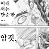

15 · 16 · 방금 전 · 원문
수집 당시 댓글 16개
털달린바퀴벌레 · 15 시간 전
존나 아플거같은데
↳ 답글 · 라다 · 15 시간 전
아픔에서오는게미식이거든요
AMD리싸쑤 · 15 시간 전

북북춤할아버지 · 15 시간 전
와 첫짤이 ㅗㅜㅑ
서어엉자아앙 · 14 시간 전
교토대 무슨 연구회인가 그것도 있지않았나
↳ 답글 · 닉네임변경42 · 14 시간 전
https://youtu.be/oqgwa_FjrNs?t=2811
닉네임변경42 · 14 시간 전
세번째는 하체에 피가 안통해서 퍼래진건가?
2019년 · 14 시간 전
적어도 노브라로 해주지...
TPさくら · 14 시간 전
온몸 다 뻘개진거봐 아프겠다 대체 왜 이게 유행...
성출발증환자 · 13 시간 전
어우 마지막은 진짜 피 안통할거 같은데
정상화의신 · 2 시간 전
멘토스박하맛 · 1 시간 전
갑자기도 아님 전통의 스테디셀러임 ㅋㅋㅋㅋㅋ
아니이개외안되 · 1 시간 전
돈이 되나봐
시간째금연중 · 32 분 전
ㅗㅜㅑ
담아내기 · 31 분 전
저거 무슨 대학 논문인가 수업도 있지않았나
↳ 답글 · 말랑흑염소 · 31 분 전
일본은 논문도 있고속박 책자도잇음

존나 아플거같은데